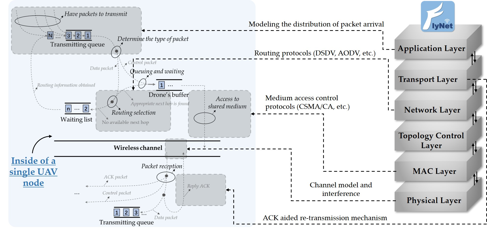

|
 |
Project description
This Python-based simulation platform can accurately model the protocol stack (including network layer, MAC layer and physical layer),
mobility model and energy model of flying ad-hoc network, and can provide the evaluation of various performance indicators (such as packet delivery ratio (PDR), end-to-end delay, throughput, etc.)
In addition, the platform adopts modular programming, so that users can easily develop and verify algorithms according to their own needs.
Project link: https://github.com/Zihao-Howard-Zhou/Simulation-Platform-for-UAV-network
|